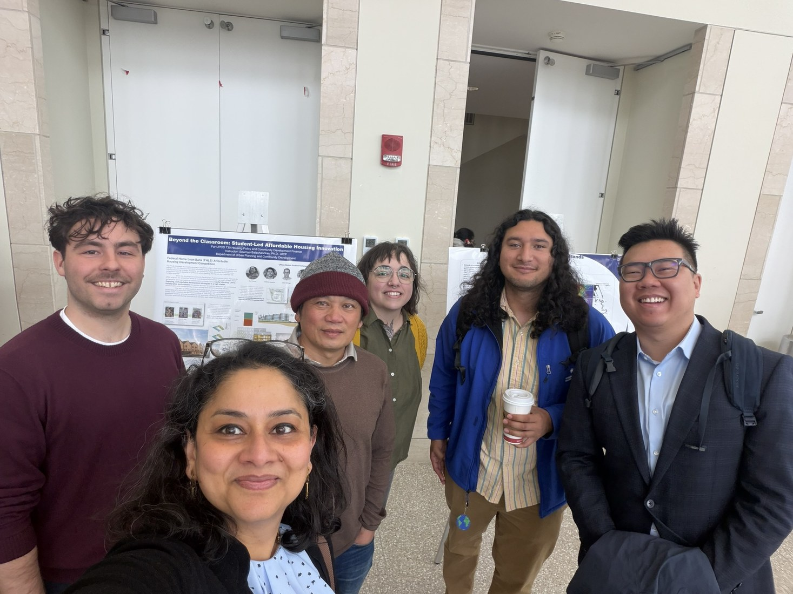
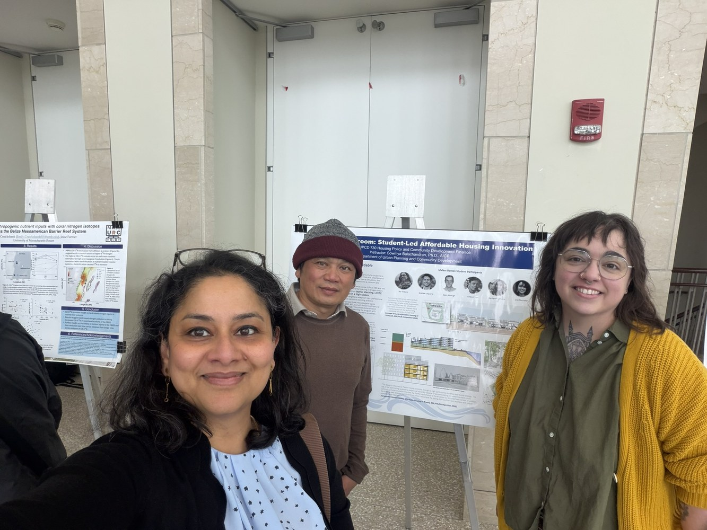
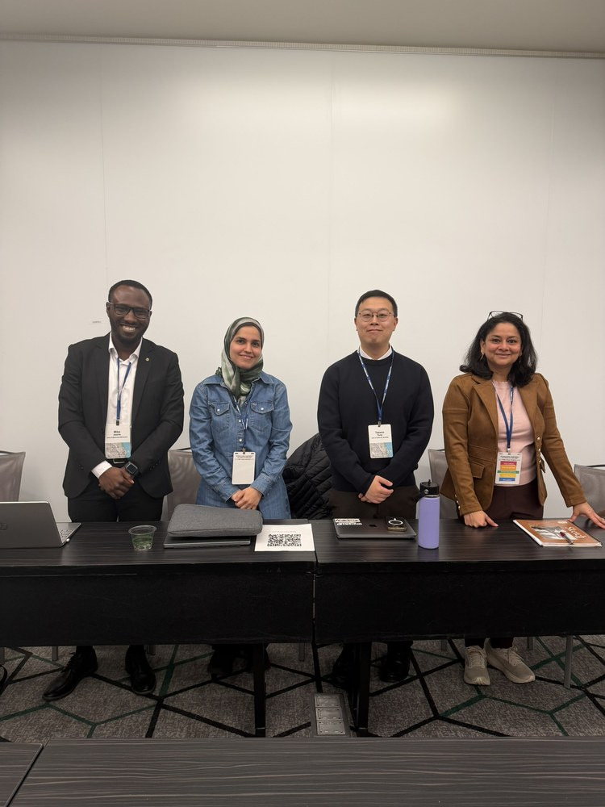
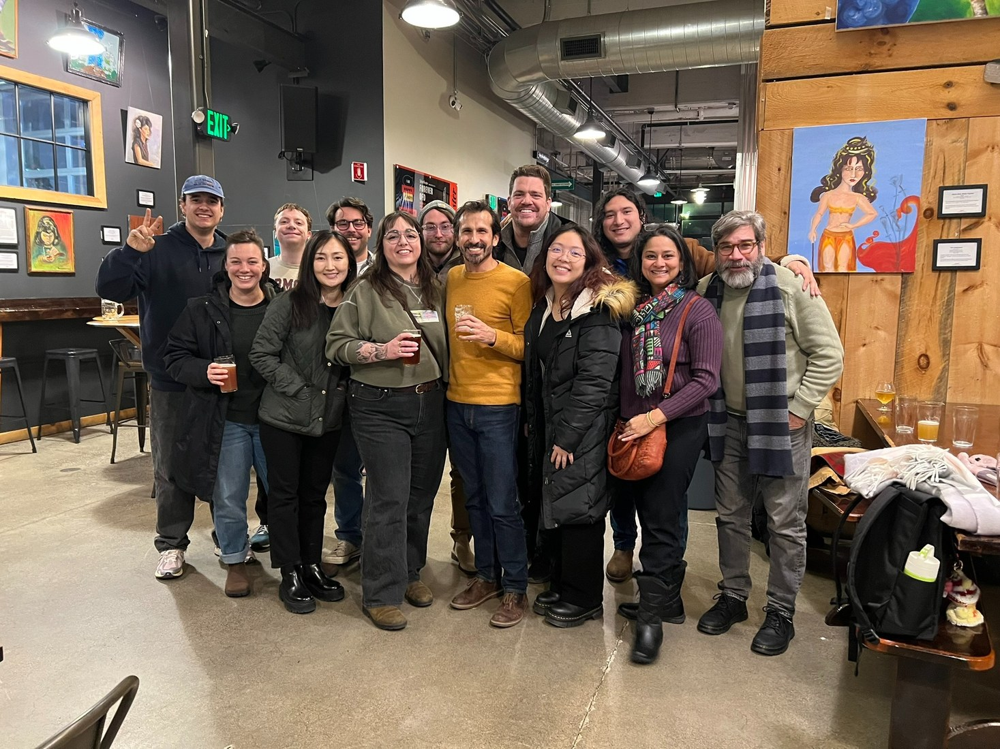
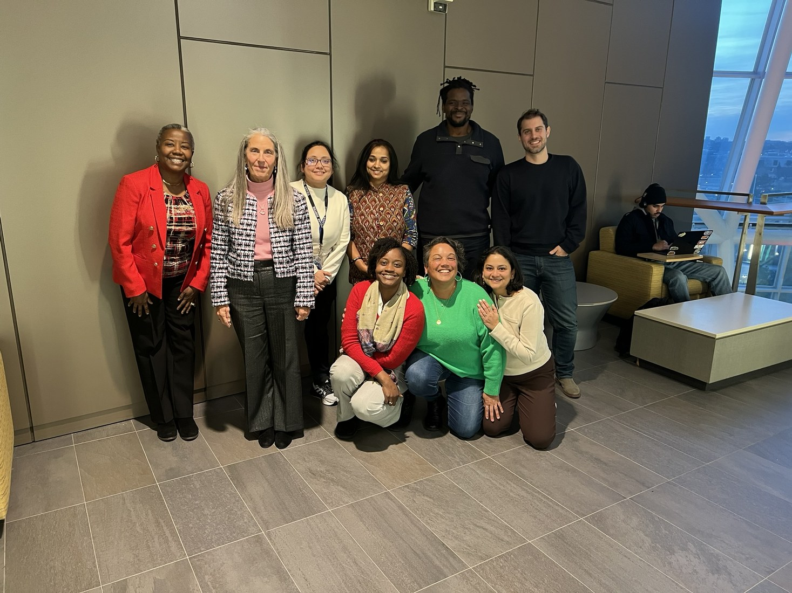

Research community
Collaborative research, mentoring, and student work.
My research and teaching are built around collaboration with students, public agencies, nonprofits, and community partners.

Lab culture
The research community around my work includes graduate students, collaborators, community partners, and public agencies. Students contribute to spatial analysis, fieldwork, interviews, focus groups, literature synthesis, report writing, and public presentations.
Gallery
Selected images from student presentations, conference activity, community engagement, and research collaboration.





